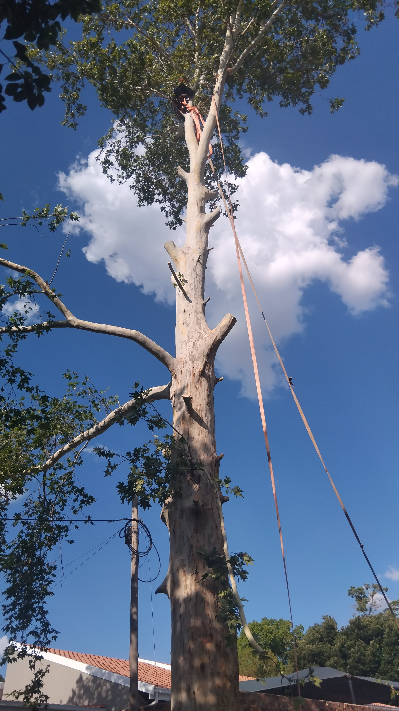

Bienvenido a Servicios de Tala de Árboles en Pretoria Este/ Servicios de Tala de Árboles Andrew, su socio de confianza para el cuidado y mantenimiento integral de árboles en Pretoria Este, Pretoria
Central y áreas circundantes. Con un compromiso con la excelencia y una pasión por preservar la belleza de su paisaje, ofrecemos una
gama de servicios adaptados a sus necesidades relacionadas con los árboles.
NB: Estamos completamente asegurados contra cualquier accidente o desgracia.
En Servicios de Tala de Árboles en Pretoria Este/ Servicios de Tala de Árboles Andrew, nos enorgullecemos de nuestra experiencia en tala de árboles, eliminación de tocones, poda de árboles, modelado y eliminación de
residuos posteriores a la limpieza. Nuestro equipo está compuesto por profesionales dedicados con amplia experiencia y el equipo más moderno para garantizar soluciones
eficientes y seguras para el cuidado de los árboles.
Nuestra misión es mejorar la estética y la seguridad de su propiedad mientras promovemos la salud y longevidad de sus árboles. Ya sea una
remoción de árboles a gran escala o un modelado meticuloso para mejorar la belleza de su paisaje, abordamos cada proyecto con precisión y cuidado.
Lo que nos distingue es nuestro compromiso con la satisfacción del cliente y la responsabilidad ambiental. Priorizamos prácticas ecológicas y
cumplimos con los estándares de la industria para minimizar el impacto en el medio ambiente mientras brindamos servicios de primera calidad.

Como un negocio local y operado, entendemos las necesidades únicas de nuestra comunidad. Estamos dedicados a servir a nuestros clientes con
honestidad, confiabilidad y profesionalismo, asegurando que cada proyecto se complete con su máxima satisfacción.

Contacte a Servicios de Tala de Árboles en Pretoria Este/ Servicios de Tala de Árboles Andrew hoy para experimentar la excelencia en el cuidado de árboles. Permítanos transformar su espacio exterior en un entorno más seguro y
hermoso, dejándolo impecable después de que nuestro trabajo esté terminado.

Un día bien aprovechado en el trabajo, haciendo un cambio en nuestra comunidad.
Érase una vez en Pretoria.
¡Siéntase libre de ajustar o personalizar este borrador para que coincida mejor con su voz y los detalles específicos de su negocio!